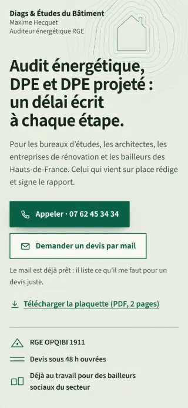
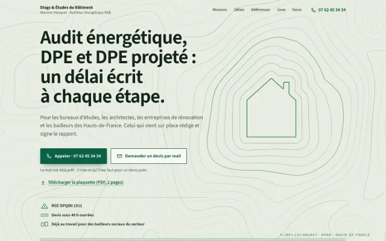
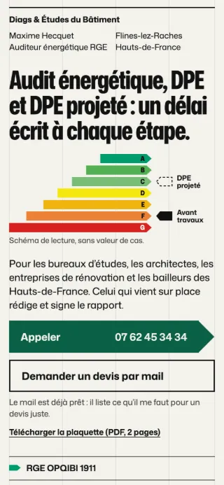
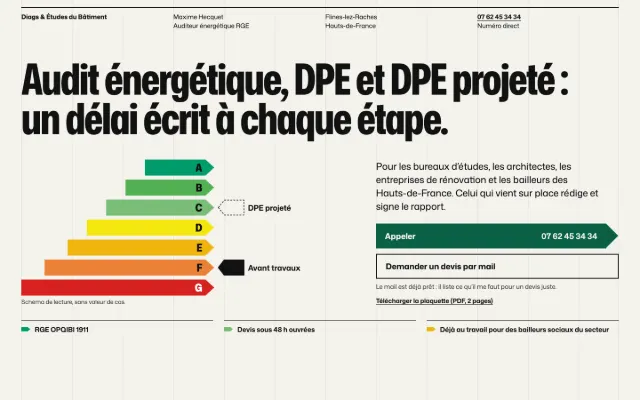

Proposition 1 · Le territoire
Calme et posée : la carte des Hauts-de-France, des courbes de niveau qui dessinent une maison, dans ton vert.
Ouvrir la proposition 1, Le territoireLe texte est le même dans les deux, seul le style change ; ta page actuelle reste en ligne telle quelle tant que tu n’as pas choisi.
Ouvre-les sur ton téléphone, puis sur ton ordinateur si tu peux.


Calme et posée : la carte des Hauts-de-France, des courbes de niveau qui dessinent une maison, dans ton vert.
Ouvrir la proposition 1, Le territoire

Directe et franche : une affiche, avec l’étiquette énergie de A à G dont le repère monte de F à C quand tu fais défiler.
Ouvrir la proposition 2, L’afficheLe PDF de 2 pages que les pros peuvent télécharger depuis la page. Seul son titre change, comme celui des deux pages : « Audit énergétique, DPE et DPE projeté : un délai écrit à chaque étape. » Relis-la aussi.
Réponds-moi directement, par message ou vocal.
Alexis